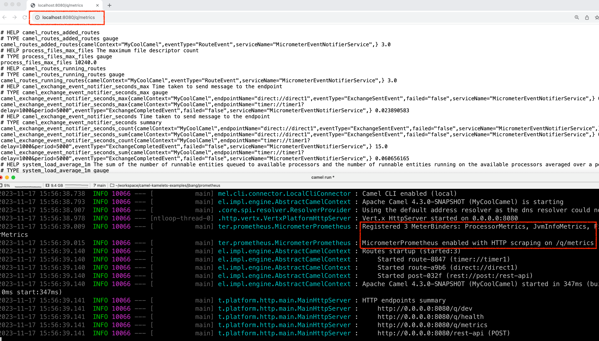
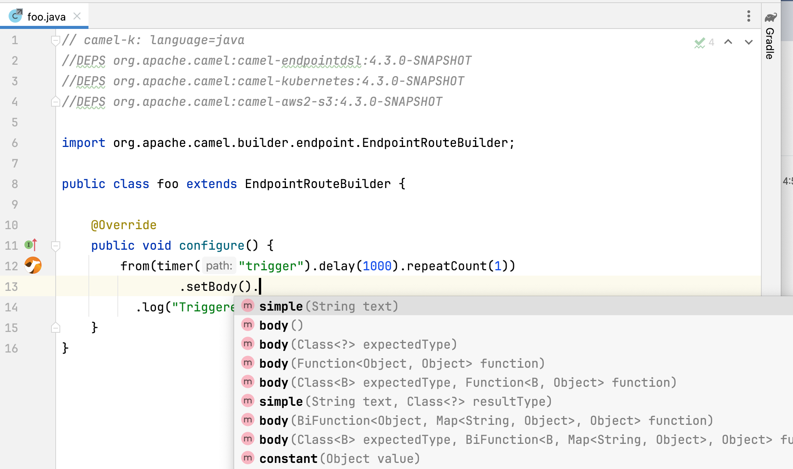

Apache Camel 4.3 (non LTS) has just been released.
This release introduces a set of new features and noticeable improvements that we will cover in this blog post.
Camel Core
Added basic support for Java 21 virtual threads. Note this is experimental and there is more work to complete to have full support for virtual threads. More details at threading model.
The simple language can now work better with JSon and XML with inlined jq/jsonpath/xpath functions. This can be used for basic message transformation. You can find an examples at:
We added debugStandby option to allow route debugging a running Camel application on demand. Being in standby mode has no overhead and only when debugging is activated then Camel runs in debugging mode, which can then be deactivated to go back to run in normal mode.
Camel Main
Added support for Prometheus in the new camel-micrometer-prometheus component, that makes it possible to expose metrics in Prometheus format, as shown below:

This can be configured in application.properties:
- Micrometer and Prometheus options using
camel.metrics.
DSL
We added the following EIPs:
setHeadersEIP to make it easier and less verbose to set multiple headers from the same EIP.convertHeaderToEIP to make it easy to convert header value to a specific type.
The throttler EIP has been refactored to throttle based on concurrent requests instead of sliding window.
We improved configuring beans, that can now support builder beans, that are used to build the actual bean. For example in the following YAML notice how the builderClass refers to class responsible for building the target bean:
- beans:
- name: myCustomer
type: com.mycompany.Customer
builderClass: com.mycompany.CustomerBuilder
properties:
name: "Acme"
street: "Somestreet 42"
zip: 90210
gold: true
- from:
uri: "timer:yaml"
parameters:
period: "5000"
steps:
- bean:
ref: myCustomer
method: summary
- log: "${body}"
The builder class is required to have a build method that Camel invokes. The name of the method is build by default.
To see more see the following examples:
- https://github.com/apache/camel-kamelets-examples/tree/main/jbang/bean-builder
- https://github.com/apache/camel-kamelets-examples/tree/main/jbang/bean-inlined-code
Camel JBang (Camel CLI)
We have continued investing in Camel JBang, and this time we have some great new stuff in the release.
We have added support for using JBang style for declaring dependencies by using //DEPS code comments, as shown in the following Java file:
//DEPS org.apache.camel:camel-bom:4.3.0@pom
//DEPS org.apache.camel:camel-endpointdsl
//DEPS org.apache.camel:camel-kubernetes
//DEPS org.apache.camel:camel-aws2-s3
import org.apache.camel.builder.endpoint.EndpointRouteBuilder;
public class foo extends EndpointRouteBuilder {
@Override
public void configure() {
from(timer("trigger").delay(1000).repeatCount(1))
// something that may use Java APIs from Kubernetes
}
}
You can now also easily use JBang way of editing source code in your favorite editor, such as jbang edit -b foo.java, shown in the screenshot below:

You can find an example at jbang-edit example.
Another new functionality is the live message transformer with the new camel transform message command. You can find detailed information in the camel-jbang docs, a basic example is here json transformation, and we have a video recording on YouTube.
We have improved the camel export to avoid starting some services that was not needed, which could potentially cause the export to fail or take longer time.
Camel JBang now accurately reports resolved vs download for dependency resolution. Previously it may report downloading but the dependency was resolved from local disk. You can also run in --verbose mode that shows verbose details for dependency resolution that can be useful for troubleshooting.
Camel JBang export to camel-main can now configure authentication for container image registries.
Spring and Spring Boot
Upgraded to latest Spring Boot 3.2.0 release.
The health checks in Camel now incorporate with the Spring Boot way of doing readiness and liveness check.
SBOM
Starting from releases 4.0.3 and 4.2.0, we started to publish JSON and XML SBOM in the Camel website download section. An SBOM is a “software bill of materials” and in recent years has emerged as a key building block in software security and software supply chain risk management. An SBOM is a nested inventory, which means you could have an overview of all the components of your software.
In combination with other tools, the SBOM could be analyzed against the CVEs Database and anyone could be able to have a security analysis always up-to-date. We plan to include SBOMs in all of our releases and the work has already started.
This is of particular interest for a project like Camel because we are using a large number of dependencies (direct and transitive) in our projects and it’s really hard to track everything. From the community perspective, this could also be a good entry point for new contributors to periodically have a look at new CVEs and try to fix them.
Miscellaneous
The camel-hdfs component has been deprecated and planned for removal soon. The Apache Hadoop project is unfortunately not offering client JARs with a limited set of dependencies, which leads to a giant dependency set that have many old versions that has known CVEs.
The camel-file and camel-ftp components can now also write SHA checksum file, when uploading files.
The camel-jetty component has been upgraded from Jetty 10 to 12.
The camel-openapi-java now better support both OpenAPI 3.0 and 3.1 at the same time.
Components such as camel-ftp and others that can take a long time on first poll, will now report as ready more eager in readiness check. Before they would become ready after first poll completed; this could cause problems if downloading a large FTP file takes a long time, causing the readiness check to fail on startup.
Upgraded many 3rd party dependencies to latest release at time of release.
New Components
camel-aws-config- Manage AWS Config service.camel-elasticsearch-rest-client- Perform queries and other operations on Elasticsearch or OpenSearch (uses low-level client).camel-kubernetes-cronjob- Perform operations on Kubernetes CronJob.camel-micrometer-prometheus- Camel Micrometer Prometheus for Camel Maincamel-smb- Receive files from SMB (Server Message Block) shares.
Upgrading
Make sure to read the upgrade guide if you are upgrading from a previous Camel version.
Release Notes
You can find more information about this release in the list of JIRA tickets resolved in the release:
Roadmap
The following 4.4 release (LTS) is planned for February 2024.